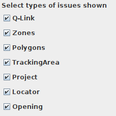
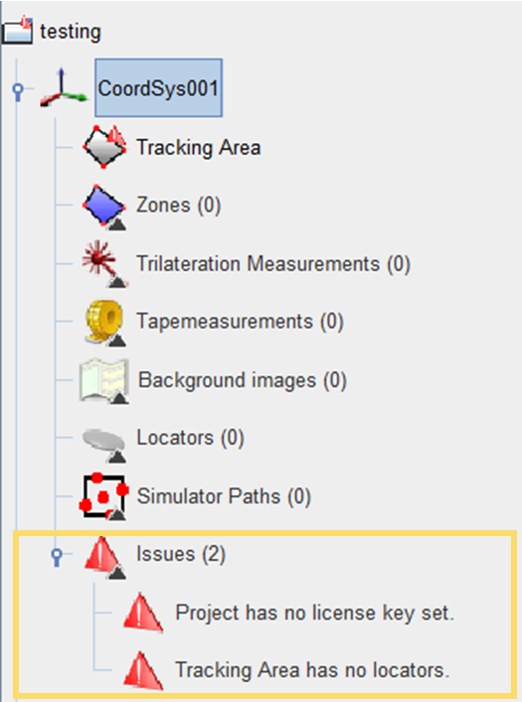
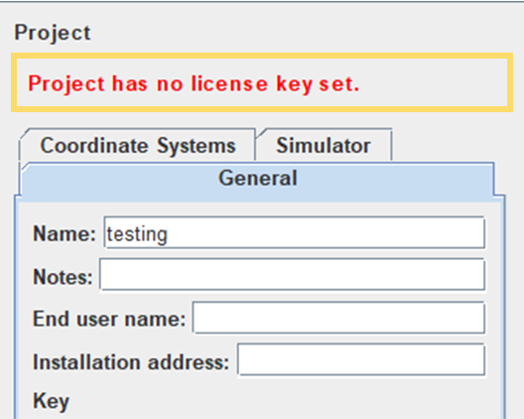

Check Issue List
The QSP's issues feature is a troubleshooting tool to help you identify any problems with your project plan, so that you can fix them before you start running the Quuppa system. This section will walk you through viewing and interpreting the issues notifications.
Select Issue Types to Show
The QSP's Issues feature can identify different types of issues in your project file. Depending on the stage of you deployment, you may be more interested in some issues than others. For this reason, the QSP allows you to select the types of issues that you are actually interested in seeing at the moment. To do so:
- Open your project in the QSP.
- In the Project Object Tree on the left, click on Issues.
- The Object Info Panel will open on the right, showing a
list of the types of issues that the QSP can show. Select the types of
issues that you want to see using the checkboxes and unselect any that you
are not currently interested in. Remember: This selection only affects the visibility of the issues warnings in the QSP and any existing issues may still cause problems when running your project. If you notice that your project is not working as expected, checking for all of the issue types can help you to troubleshoot the problem later.
View Issues
The issues identified by the QSP can be viewed in a couple of different ways: in the Project object tree and in the object info panel.
- Project Object Tree - A full list of the issues for each coordinate
system in your project file can always be found in the project object tree on
the left of the QSP. In addition to the coordinate system specific issues, the
list for each coordinate system will also show any general project file level
issues. By clicking on any of the issues in the project object tree, the QSP map
view will display the object in question and/or the relevant object info panel
will be displayed on the right.

- Object Info Panel, Specific Issue Selected - When an object that the QSP
has identified an issue for is selected (either in the object tree or in the map
view), a red text describing the issue is displayed in the object info panel
shown on the right. This text can be used to decide what action needs to be
taken to solve the issue. For more information about the action needed based on
text displayed, see the Fix Issue section below.

Fix Issue
In the table below, you can find a list of the issue messages provided by the QSP, a description of what these issue messages mean and the actions that need to be taken to fix the issue.
| Issue Message | Description | Action |
|---|---|---|
| Project has no license key set. | The project has not been associated to a Quuppa key. The project needs to be linked to a key so that the QPE can run the project. | Copy the relevant project key from the Quuppa Customer Portal or create a new project key and associate it with the project file before submitting the project file to the Quuppa Customer Portal. |
| Smart zones overlapping. | Two or more zones with smart edges are currently overlapping in the project file. As the smart edge feature is used to define physical obstacles, such as walls, for the QPE, the smart zones cannot overlap. | Fix the zone edges for the smart edged zones in question so that they no longer overlap. This can be done my manually adjusting the zone edge, but we recommend using the QSP's fix zones tool for more precise results. |
| Coordinate system has no tracking area. | The coordinate system is missing a tracking area. The tracking area is the defined area in the coordinate system in which tracking is enabled and so it is important to add a tracking area to all coordinate systems. If no tracking area is needed in this coordinate system, the coordinate system itself is most likely not needed in the project file and can be deleted. | Add a suitable new tracking area group for type of tracking area that you need and then add at least one tracking area into that tracking area group. |
| Tracking Area has no Locators. | There are no Locators in this tracking area. Locators collect the data from the tags and so without Locators, the QPE won't be able to track anything in this tracking area. They are an essential component of the Quuppa system. | Add Locators to the tracking area. We recommend using the Locator Distributor Tool for an even coverage of the area but Locators can also be added one by one. |
| Locator has not been identified! Using temporary UUID. | A Locator has not yet been identified with it's ID. A Locator ID needs to be set before the Locator can be used for tracking. | Select the Locator and Start Identification Wizard or set the ID manually. |
| Locator has no orientation. | Locator orientation has not yet been confirmed. Locator's orientation needs to be known accurately so that it can be used for accurate tracking. | Set the Locator orientation manually or run the Focusing Wizard. |
| Opening does not have a zone specified. | An opening is missing an origin or/and a destination zone. For the system to work optimally, you should define between which zones an opening allows objects to move. | Select the opening with an issue and choose an origin and/or destination zone from the drop down menu. |
| Opening has the same origin and destination. | An opening cannot have the same zone selected as the origin and destination. An opening needs to lead from one zone to another. | Select the opening with an issue and modify the origin and/or destination zone so that they are different. |
| Opening is referring to a Zone or Tracking Area that is x.xx m away. | An opening is too far away from the selected Zone or Tracking Area. | Select and drag the opening closer to the intended Zone or Tracking area. |
| No hub in range for satellite. | A Q-Link satellite Locator is too far away from a Q-Link hub Locator. | Move the Q-Link satellite Locator closer to one of the hub Locators. |
| Insufficient hub capacity available for satellite. | There are too few Q-Link hub Locators planned compared to the number of planned satellite Locators. | Add more hub Locators so that all satellite Locators show a valid connection to one of the hubs. |